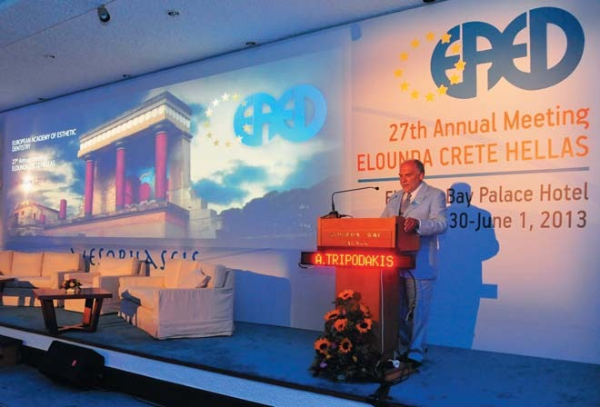
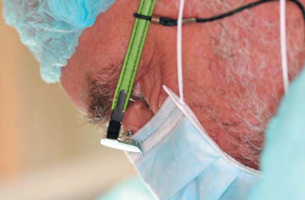
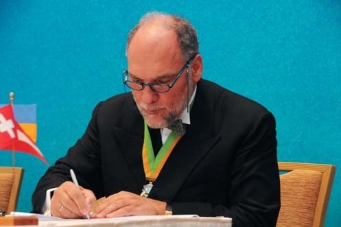
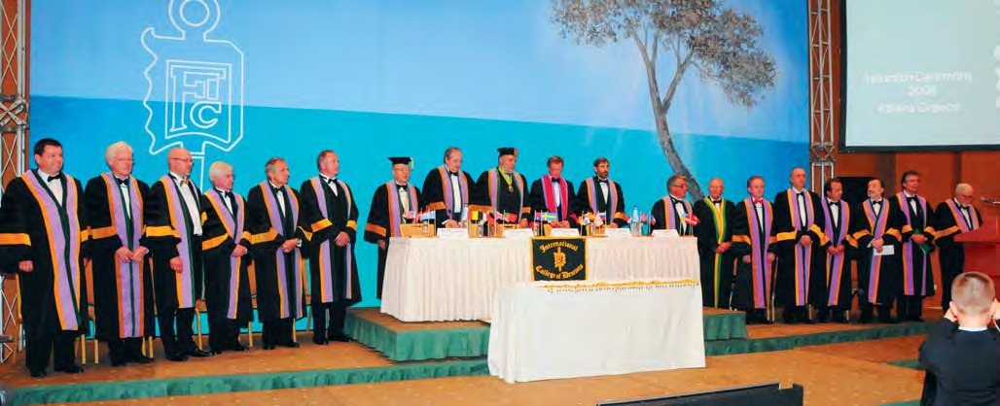
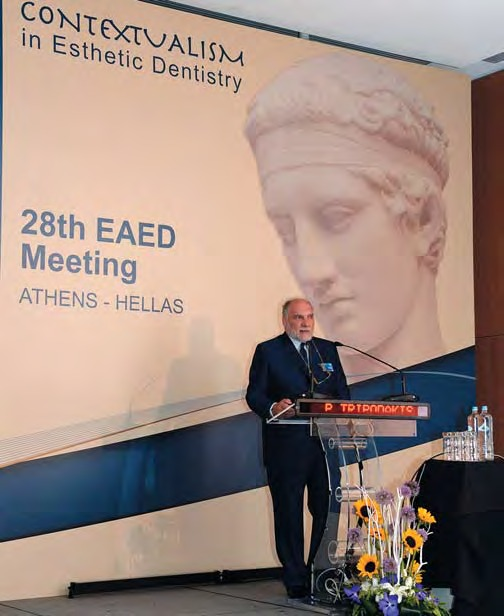
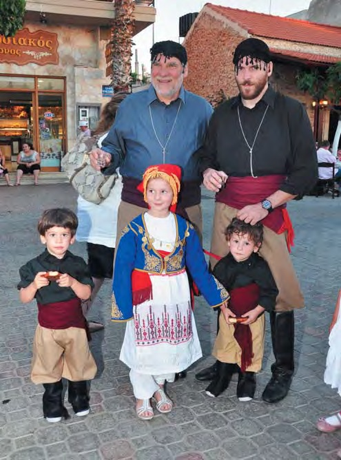
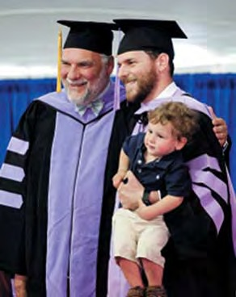

Вітальня · журнал «ДентАрт» 2016 №3
Професор Аріс Петрос Тріподакіс: «Людина має бути освіченою в питаннях збереження стоматологічного здоров'я із самого раннього віку»
Доктор Аріс Петрос Тріподакіс, професор Афінського університету і запрошений професор Університету Тафтса (Бостон, США), відомий у стоматологічній спільноті не лише як висококласний фахівець у галузі ортопедії та остеоінтеграції, але і як талановитий організатор. Невипадково його обирали президентом престижних стоматологічних організацій: Американського співтовариства стоматологів Європи (2002-2003), Міжнародного коледжу стоматологів-ортопедів (2003-2005), Міжнародного коледжу стоматологів (2007-2008), Європейської академії естетичної стоматології (2013-2014).
Професор Тріподакіс — відомий міжнародний лектор, член редколегій «Журналу про остеоінтеграцію» і журналу «Японські дослідження і практика в галузі зубопротезування». Ми зустрілися в Копенгагені на конгресі Європейської академії естетичної стоматології.
«Назва «триніжний міст» виникла не через її співзвучність з моїм прізвищем»
— Шановний пане Тріподакісе, відомий такий факт вашої біографії: у 1995 і в 1998 роках Вам були присуджені дві нагороди за дослідження від Американської академії остеоінтеграції. У чому суть цих досліджень?
— Красно дякую за це запитання. У 1981 році, коли я залишив США після отримання диплома з ортопедичної стоматології і ступеня магістра стоматології в галузі оклюзії зубів, я поставив під сумнів деякі аспекти отриманих знань і вирішив креативно переосмислити їх. Я завжди мислив нестандартно і люблю змінювати і перевіряти ті ідеї, над якими працюю в галузі освіти.
Наприклад, у 1980-х роках я працював над ідеєю в галузі нетрадиційної стоматології — зміненою овоїдною промивною частиною мостовидного протеза з підвищеним тиском на ясна. Понтики, як правило, практично не торкаються гребеня. Для отримання найліпшого естетичного результату необхідний гребінь, який має увігнутий профіль, і при встановленні мостовидної конструкції з'являється порожнина, яку неможливо очищати. Тому наприкінці 80-х років з'явився матеріал, який був опублікований в 1990 році, про овоїдну форму понтика з підвищеним тиском на ясна. Ця стаття не отримала нагороди на з'їзді Європейської ортопедичної асоціації в Осло, однак вона стала класичною статтею з дизайну понтика. А в огляді літератури у журналі «Ортопедична стоматологія» була оцінена як найбільш провокаційна і цікава стаття за ціле десятиріччя.
Коли наприкінці 1980-х з'явилися імплантати, я відразу ж почав працювати з ними, і звичайно, тоді я навіть не міг собі уявити нинішній естетичний результат у порівнянні з титановими штифтами того часу, що стирчали з тканин. Тоді ж з'явилася ідея попрацювати з керамічними абатментами. Пізніше я зрозумів, що керамічні та титанові абатменти мають різні властивості і характеристики. Ігнер і Преципіно запропонували полікристалічні керамічні абатменти з високою яскравістю, подібні дизайном до титанових абатментів. Я відразу подумав, що це ніколи не буде працювати, і вирішив змінити дизайн. Замість створення зони натягу у внутрішній структурі абатмента стабілізуючою нарізною головкою я перемістив нарізну головку на вершину абатмента, що призвело до стиснення усієї конструкції, тому що кераміка високорезистентна до тиску, але має низькі показники стійкості до натягнення. З цього питання ми працювали разом з професором Струбіном (Фрайбург) і професором Капертом, який працював з компанією Івоклар багато років, а також зубним техніком університету. Цей науковий матеріал був поданий до Академії остеоінтеграції (США) в 1994 році і отримав премію. Хоча на той момент було дуже мало інформації про керамічні абатменти.
Друга робота, яка отримала нагороду, була виконана завдяки пацієнтам. Пацієнти приходять до нас з однієї причини: їх не цікавить хірургія, їх не цікавлять імплантати, їх цікавлять зуби. Звичайно ж, якщо імплантати будуть покриті коронками, пацієнти будуть задоволені. Проте пацієнти хочуть вийти з клініки із зубами, і щоб ці зуби були зафіксовані. Я вважаю, що безнадійні зуби — це не завжди непотрібні зуби. Коли пацієнти зберігають «безнадійні» зуби до моменту їх видалення, яке необхідно провести для встановлення повнознімних зубних протезів, що їх пацієнти дуже не люблять, вони часто просять поставити їм імплантати відразу після видалення і не хочуть іти з протезом. На цей проміжний період я створюю дизайн такого тимчасового знімного протезу, який називається триніжний міст. Назва «триніжний» (tripod) міст виникла не через її співзвучність з моїм прізвищем, а через те, що навіть одне безнадійне ікло, або один центральний різець, або ж два латеральних різці, або два ікла можуть стати однією з опор для триніжної підтримки, двома іншими опорами можуть стати м'які тканини в зоні горбистості верхньої щелепи. Така мобільна і пружна конструкція буде досить стійкою під впливом тиску завдяки своєму триніжному дизайну. Звичайно, вона буде нестійка під впливом латеральних сил, тому оклюзія повинна бути створена без передніх контактів, з плоскими жувальними поверхнями.
Цей триніжний міст став кандидатом на другу нагороду, яку нам вручили в Атланті на з'їзді Академії остеоінтеграції. Інформацію про цей винахід ніде не публікували, вона поширювалася по всьому світу тільки завдяки моїм лекціям. Учора на конгресі до мене підійшов лікар з Ізраїлю із захопленим поглядом і сказав, що мій винахід став у пригоді не тільки пацієнтам, але й лікарям, оскільки завдяки триніжному мосту наші пацієнти ні дня не ходять без зубів! Сьогодні, через 20 років після першої презентації триніжного моста, я думаю про написання і публікацію статті, яка б мала ще більше значення завдяки 20-річному досвіду, з корекцією багатьох складнощів, що виникали у процесі розробки цієї технології.

Професор Аріс Петрос Тріподакіс — президент Європейської академії естетичної стоматології. 2013-14 роки.

Функціональність, добротність і краса — стиль роботи доктора Тріподакіса.
«Конструкція повинна вписатися в контекст людського тіла функціонально, біологічно і естетично»
— Продовжуючи тему нашої бесіди, скажіть, у майбутньому більшість літніх людей будуть із зубами чи без зубів?
— Звичайно ж, не без зубів. Наша спеціальність — це медична спеціальність. Ми — лікарі. І будучи лікарями, ми займаємося хворобами і деформаціями. Ми повинні вилікувати хворобу і відновити деформовані ділянки. Я вважаю, що наука йде вперед і можуть з'явитися ще такі дивовижні люди, як Пер-Інгвар Бранемарк, який змінив життя людей, котрі втратили зуби. Не повинно бути пацієнтів, які змушені жити без своїх зубів або залишатися без фіксованих зубних протезів. Я особисто не вірю в протези, фіксовані на імплантатах, і намагаюся, щоб мої пацієнти залишали кабінет з незнімними зубними протезами. Іноді пацієнти надягають знімні протези з економічних причин або тому, що не завжди усвідомлюють, що зі знімними протезами вони знижують якість життя. Крім цих двох категорій пацієнтів, всі інші, як правило, мають або свої натуральні, або штучні зуби. Природно, краще зберегти свої зуби, але якщо сталася втрата зубів, то імплантати стають ефективним вирішенням цієї проблеми.
— Ми, європейці, сприймаємо Грецію як колиску медицини. Клятва Гіппократа залишається символом на всі віки. Але ми бачимо, що в останні десятиріччя стоматологія рухається у бік косметології, коли пацієнт вимагає «зробіть мені красиво» за будь-яку ціну, а стоматолог, радіючи швидкому заробітку, теж не заглиблюється в проблеми нормального функціонування зубощелепної системи. Якими моральними правилами має керуватися сучасне покоління стоматологів? Клятва Гіппократа XXI століття — що в ній головне?
— Правила придумані, щоб їх порушувати. Нам не потрібні правила, щоб діяти як лікарям. Нам потрібно вміти вибудовувати правильну перспективу. Європейська академія естетичної стоматології роз'яснює, що косметологія не входить до нашої програми навчання. Існує велика різниця між сучасним тлумаченням слова «естетика» і його значенням у давньогрецькій термінології. Воно означало — «добротність», «краса». Існувало навіть таке прислів'я — «Краса врятує світ». Ми шукаємо медичну перспективу сучасної стоматології, яка б мала естетичний вигляд, була б продуктивною, відновлювала втрачене, роблячи відновлений об'єкт частиною людського тіла. Це означає, що конструкція повинна вписатися в контекст людського тіла функціонально, біологічно і естетично. Ми віримо, що один штучний центральний різець повинен імітувати натуральний зуб, що стоїть поруч, на відміну від спроби підігнати за виглядом натуральний зуб до штучного. Ми хочемо імітувати природу, автентичність. Саме такої естетики ми намагаємося досягти в роботі з пацієнтами. Дотримуючись цієї концепції, ми прагнемо досягти найліпшого результату лікування, докласти максимальних зусиль з боку стоматолога і зубного техніка для досягнення по-справжньому гарного результату в найширшому сенсі цього слова.
«Криза змусила нас замислитися і переглянути свій стиль життя»
— Греція пережила серйозні економічні проблеми. Як позначилася криза на грецькій медицині і стоматології і які уроки з цього можна взяти?
— Правду кажучи, криза змусила нас замислитися і переглянути свій стиль життя, перейти на більш розмірений темп. Ми стали гуманнішими, передбачливішими і навіть певною мірою духовнішими. Звичайно, люди не були щасливі у зв'язку з виникненням такої ситуації, але що таке щастя? Я думаю, що щастя має набагато меншу духовну цінність, ніж уміння бути вдячним. І коли настає ситуація, коли ти втрачаєш якісь матеріальні блага, ти стаєш більш вдячним за своє здоров'я, за шанс прожити життя в цьому світі, за свою сім'ю, за всі свої духовні цінності. Бути вдячним — це великий сенс життя. Я думаю, що криза допомогла нам змінити нашу перспективу і, звичайно, вплинула на всі аспекти нашого життя, в тому числі і на медицину. Ми були змушені знизити ціни на наші послуги, щоб мати можливість і далі вести бізнес, природно, скоротилися і зарплати наших працівників. Ми втратили чимало грошей, надаючи пацієнтам можливість розраховуватися навиплат, іноді вони не платили, і нам доводилося бігати за ними. Це була складна ситуація, але, як я вже сказав, вона мала і хороші сторони.

Професор Тріподакіс — президент Європейської секції Міжнародного коледжу стоматологів.

53-й щорічний конгрес Європейської секції Міжнародного коледжу стоматологів. Афіни, 2008 р.
— Ви автор багатьох публікацій і член редакційних рад «Журналу про остеоінтеграцію» і «Японських досліджень і практики в галузі зубопротезування». Попри всю різноманітність друкованих та онлайн стоматологічних журналів, які, на Ваш погляд, фундаментальні проблеми стоматології ще недостатньо висвітлюються?
— Особисто я завжди шукаю сенс дій у всіх дисциплінах нашої професії. Я б не сказав, що щось не висвітлюється. Сьогодні так багато різної, в тому числі і наукової, інформації опубліковано в Інтернеті і в журналах, і будь-яка проблема висвітлена, питання лише в тому, як наполегливо ви шукаєте інформацію про це. Напевно, часто ми просто її не шукаємо. Бракує, вважаю, інформації, яка б спонукала стоматологів частіше замислюватися над тим, навіщо вони роблять ті чи інші професійні дії, а не над тим, яким чином ми їх робимо.
— Відомий італійський стиль реставрації, американський... Відомі стоматологічні школи існують у багатьох країнах світу. Які риси грецької школи стоматології, зокрема реставрації?
— Коригуючи Ваше запитання, скажу, що розподіляючи стоматологію на американський стиль, італійський стиль, ви вже розподіляєте індивідуальний дух стоматолога згідно з його географічною локацією, що, на мій погляд, не зовсім коректно. Я вважаю, журналісти і медіа мають поважати індивідуальність, особистість у кожному лікареві і публікувати інформацію про професійні досягнення, не піддаючись впливу масовості і не розділяючи людей за географічними чи іншими критеріями. Гадаю, розподіл на американський, італійський або грецький стиль не сприяє досягненню справжнього прогресу. Я вважаю, що прогрес має ґрунтуватися на трьох питаннях: Навіщо нам потрібна досконалість у стоматології? Як цього досягти? І в чому полягає вигода від цілеспрямованих спільних зусиль для досягнення цієї досконалості? Ось це і є справжній стиль, не італійський, не американський, а справжній самобутній стиль. Це суть нашої професії і те, до чого потрібно прагнути.

28-ий конгрес Європейської академії естетичної стоматології. Афіни, 2014 р.
— Коли Ви зрозуміли, що стоматологія стане Вашою професією?
— Я закінчив стоматологічний коледж у 1973 році і так і не зустрів своїх наставників, мабуть, тому, що тоді ще не був готовий до цього і не мав достатньо мотивації, щоб шукати їх. Я вже зібрався було змінити професію. Мені подобалося працювати руками, і я дуже цікавився ювелірним мистецтвом, тому мав намір піти в ювелірний бізнес. Крім того, два моїх брати були архітекторами, вони отримали вищу освіту в університетах Бостона, США. Тому мої батьки казали мені, щоб я теж їхав у США і вступав до університету. Я подумав, що найбільше мене цікавить зубне протезування, і в 1977 році вступив до Університету Тафтса в Бостоні і зареєструвався на курс зубного протезування. Саме там я відкрив для себе ювелірну роботу, яка давала унікальну можливість створювати життєво важливий орган людського тіла. У той момент я знайшов себе в професії і одержав потужний стимул і мотивацію.
«Першочерговий обов'язок держави — організовувати профілактику»
— Одна із тенденцій розвитку нашої цивілізації — збільшення кількості людей похилого віку. Ортопедам можна було б радіти, що у них буде більше роботи. Але, напевно, було б більше радості, якби до нас зверталися не з такими зруйнованими зубами, як нерідко звертаються сьогодні. Що мусять зробити держави і стоматологи для поліпшення стоматологічного здоров'я населення?
— Першочерговий обов'язок держави — організовувати профілактику. Але всі зусилля держави не можуть подолати інерції кожної окремої людини. Останнє слово все одно залишається за кожним із нас. Людина повинна бути освіченою в проблемах збереження стоматологічного здоров'я із самого раннього віку. Стоматологи і державна система мають впливати на молоде населення країни. Важливо, щоб батьки навчали своїх дітей гігієні ротової порожнини і з дитинства привчали їх стежити за здоров'ям зубів. Це і буде найважливішим кроком у боротьбі за стоматологічне здоров'я нації.
У будь-якому випадку, як я вже говорив, останнє слово у виборі шляху турботи про своє здоров'я залишається за кожним із нас. Багато людей курить. Вони знають, що це шкідливо для здоров'я, але все одно продовжують курити. Держава організовує безліч антитютюнових кампаній, але курці все одно залишаються курцями. І звичайно ж, травми і деформації. Вони зустрічаються не тільки в зубощелепній системі, а й у всьому людському організмі. На щастя, є ми, лікарі, щоб долати ці проблеми. Для нас завжди є робота.
«Якщо ми не будемо пам'ятати своє минуле, у нас не буде майбутнього»
— Бачили Вашу світлину з родиною, де всі ви — у національному одязі. Збереження національних традицій — це Ваш життєвий принцип?
— Так, повага і збереження національних традицій — це одна з найважливіших речей, які ми можемо зробити для нашого майбутнього. Якщо ми не будемо пам'ятати своє минуле, у нас не буде майбутнього.
— Розкажіть про свою сім'ю. Кажуть, що професора Тріподакіса всюди бачать з дружиною. Чим займаються Ваші діти?
— У нас шестеро дітей, троє дівчат і троє хлопців. Двоє з них стали стоматологами, двоє — зубними техніками, двоє — кінорежисерами. Павлос — кінорежисер, він спеціалізується на документальному кіно. Моя донька, яка теж кінорежисер, навчалася в Італії, зараз займається сім'єю, у неї четверо синів, і вона поки що не працює. Ще двоє моїх дітей, донька і син, стоматологи, вони працюють у нашому офісі. Ті двоє моїх дітей, які стали зубними техніками, працюють у нашій лабораторії, яка існує з 1981 року. Вона переважно обслуговує пацієнтів нашого офісу, але періодично ми виконуємо роботу і для інших клінік.
Чи подорожую я завжди з дружиною? Ні, не завжди. Тому що, маючи таку велику сім'ю, хтось повинен перебувати вдома... Але нині діти виросли і ми можемо дозволити собі подорожувати разом. Тому останні кілька років Іоанна їздить зі мною значно частіше, ми отримуємо величезне задоволення від подорожей і спілкування з різними цікавими людьми.
Тепер у нашому будинку мешкають чотири покоління нашої родини: моя теща, мати Іоанни, їй 94, ми, четверо наших неодружених і незаміжніх дітей і наша донька зі своїм чоловіком і чотирма нашими онуками.

Професор Тріподакіс навчає своїх дітей і внуків поважати і зберігати національні традиції.

Може, внук також стане стоматологом?
— Як Ви зазвичай знімаєте стрес, враховуючи Ваше насичене життя? Чи є у Вас хобі?
— Я дуже люблю музику, особливо ліричну, але і це не завжди допомагає позбутися стресу. Будучи ортодоксами, ми намагаємося жити, дотримуючись наших ортодоксальних традицій. Ця довічна боротьба і прагнення жити в цих традиціях дуже захоплюють мене.
— Дякуємо за інтерв'ю! Успіхів і здоров'я Вам і чотирьом поколінням Вашої стоматологічно-кінематографічної родини!
— Дякую! Успіхів, миру і процвітання усім стоматологам — читачам Вашого журналу!
Розмовляв Сергій Радлінський.
Фото з архіву Аріса Петроса Тріподакіса.